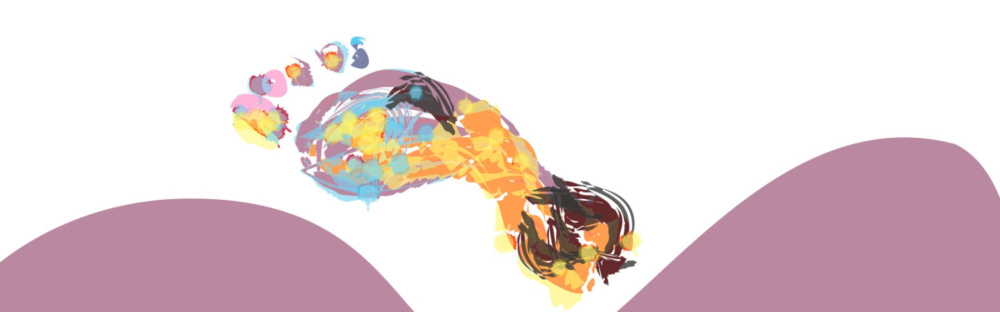
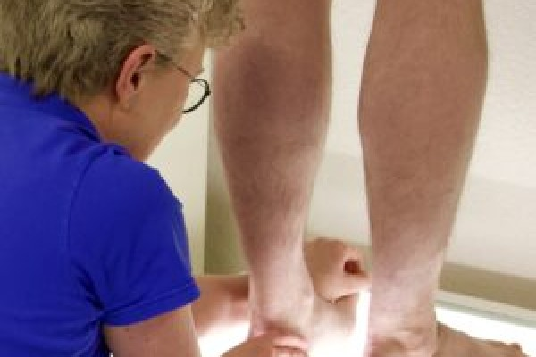
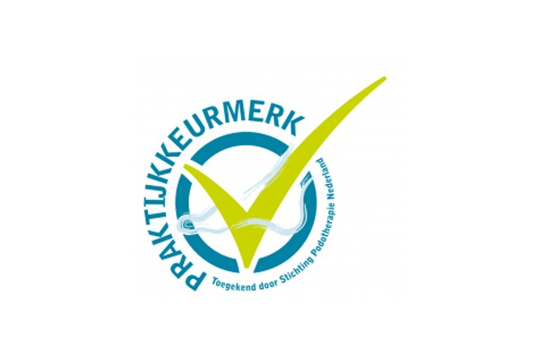

Podotherapie in Apeldoorn, sinds 1987
Ze zorgen voor uw evenwicht, maar bijna niemand ziet ze staan: voeten. Pas bij klachten blijkt hoeveel ze doen, tot in uw knie, heup en rug.


Bij Podotherapie Van der Beek kiest u bewust voor persoonlijke aandacht. U wordt behandeld door Anje van der Beek.
Podotherapeuten zijn gespecialiseerd in voet- en houdingsklachten. Zo loopt de route langs de plekken waar u bij Podotherapie Van der Beek mee terecht kunt.
De behandelmogelijkheden lopen van zolen en ortheses tot advies en voorlichting.
van de mensen met diabetes in Nederland krijgt een diabetische voet. Bij 15% van hen ontstaat een voetwond.
Cijfers zoals de praktijk ze noemt. Anje van der Beek is sinds 2011 diabetespodotherapeut.
Het gevoel in de voeten kan verminderen of verdwijnen. Een te kleine schoen, een likdoorn, een steentje in uw schoen of een te warm voetenbad voelt u dan niet meer. Zo ontstaan wondjes die moeilijk genezen.
De doorbloeding van en naar uw voeten kan afnemen. De huid wordt kwetsbaarder, gaat sneller kapot en wondjes genezen langzaam of helemaal niet.
Door uitval van bepaalde zenuwen kan de vorm van uw voeten veranderen. Klauwtenen en hamertenen kunnen ontstaan en de voet kan holler worden. Dat vergroot de kans op drukplekken, eelt en wonden.
De gewrichten van de voeten worden stijver. U gebruikt uw voeten minder goed, waardoor de kans op drukplekken en wonden toeneemt.
Met diabetes bent u vatbaarder voor infecties, zoals schimmelinfecties van huid en nagels. Heeft u een wondje aan uw voet, dan is de kans op een infectie groot.
Aangesloten bij NVvP, NVvDP, Loopzorgalliantie en het Kwaliteitsregister Paramedici. Podotherapeut is een beschermde titel binnen de BIG-wet.

Uw podotherapeut geeft oefeningen mee voor thuis. Op de website van de praktijk vindt u ze in vier delen, met voorbeeldfilmpjes.
De praktijk zet de vergoedingen van de aanvullende verzekeringen jaarlijks op een rij. Top 3 voor 2026: